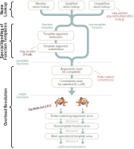
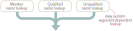
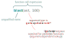
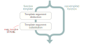
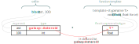
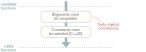
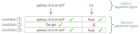
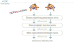

How C++ Resolves A Function Call¶
Ref: How C++ Resolves A Function Call
这是编译器如何为一个给定函数调用表达式匹配正确的函数的过程：

这些步骤包含在C++标准中，每一家的C++编译器都必须得遵守这些标准。并且，对于函数调用表达式的评估的整个过程都在编译期。
其中的一些东西都可能符合我们的直觉，但是某一些在第一眼看到还是比较让人难以理解。这其中涉及到了几个C++常谈的东西，比如ADL(Argument-dependent lookup)和SFINAE啥的。
Name Lookup¶
从名称查找阶段开始，举个例子。如下一段代码，表达式blast(ast, 100)函数调用最终会调用哪一个函数？
namespace galaxy {
struct Asteroid {
float radius = 12;
};
// candidates 1
void blast(Asteroid* ast, float force);
}
struct Target {
galaxy::Asteroid* ast;
Target(galaxy::Asteroid* ast) : ast{ast} {}
operator galaxy::Asteroid*() const { return ast; }
};
// candidates 2
bool blast(Target target);
template <typename T> void blast(T* obj, float force);
void play(galaxy::Asteroid* ast) {
blast(ast, 100);
}
第一个过程是name lookup. 在这一步，编译器会向上查找所有具有相同标识(identity)的函数和函数模版.

如流程图所示，主要有三种名称查找，每一种都有对应的规则。
- Member name lookup 发生在
.或者->标识之后，比如在foo->bar。这种lookup通常用于定位类的成员。 - Qualified name lookup 发生在当名称中携带了域标识符
::，比如std::sort。这种名称查找是显示的。只会在::左边部分所标识的范围内查找右边的部分。 - Unqualified name lookup 不属于上面范围。当编译器看到一个未限定的名称，比如
blast。会根据上下文在不同的范围里查找名称。详细的规则在这。
在我们的例子中的是一个未限定名称查找。 编译器会找到很多符合条件的声明，我们称为candidates。在上面的例子中我们有三个候选:
上面圈出的第一个候选代码值得格外关注，因为它展示了 C++ 的一个容易被忽视的特性：参数依赖查找(argument-dependent lookup)，简称为 ADL。下面是一个快速总结，以防你也遇到同样的问题。通常情况下，你不会想到这个函数会被调用，因为它是在 galaxy 命名空间内声明的，而调用来自 galaxy 命名空间之外。代码中也没有 using namespace galaxy 指令让这个函数可见。那么，为什么这个函数是候选函数呢？
其原因是，当在函数调用中使用未限定的名称时（该名称不指向类成员），ADL 就会启动，并且名称查找会变得更加贪婪。具体来说，除了常规的查找方式外，编译器还会在参数类型的名称空间中查找候选函数，这就是 "依赖参数查找 "的由来。 
具体的 ADL规则 比我在这里描述的要细致得多，但关键是 ADL 只适用于非限定名称。对于在单个作用域中查找的限定名称，ADL 没有作用。ADL 在重载 + 和 == 等内置运算符时也起作用，这让你在编写数学库时可以利用它。
有趣的是，在某些情况下，成员名称查找可以找到未限定名称查找找不到的候选者。有关详情，请参阅 Eli Bendersky 发表的这篇文章。
Special Handling of Function Templates¶
通过名称查找找到的候选函数中，有些是函数，有些是函数模板。函数模板只有一个问题：我们无法调用函数模版。只能够调用函数。因此，在名称查找之后，编译器会浏览候选列表，并尝试将每个函数模板转化为合适的函数。 
在我们的示例中，第三个候选模板实际上就是函数模板：
这个函数模板只有一个模板参数 T，因此它需要一个模板参数。调用者 blast(ast, 100) 没有指定任何模板参数，因此为了将此函数模板转化为函数，编译器必须推导出 T 的类型。在这一步中，编译器会将调用者传递的函数参数类型（如下图左侧）与函数模板期望的函数参数类型（如下图右侧）进行比较。如果右侧引用了任何未指定的模板参数（如 T），编译器会尝试使用左侧的信息对其进行推导。

在本例中，编译器将 T 演绎为 galaxy::Asteroid，因为这样做可以使第一个函数参数 T* 与参数 ast 兼容。关于模板参数推导的规则是一个很大的话题，但在像本例这样的简单例子中，它们通常会达到你所期望的效果。如果模板参数推导不起作用，换句话说，如果编译器无法以一种使函数参数与调用者参数兼容的方式推导出模板参数，那么函数模板就会从候选列表中删除。
候选列表中的任何函数模板，只要能存活到这一步，都将进入下一步：模板参数替换。在这一步中，编译器会使用函数模板声明，并用相应的模板参数替换每个模板参数的每一次出现。在我们的例子中，模板参数 T 被替换为推导出的模板参数 galaxy::Asteroid。这一步成功后，我们终于得到了一个可以调用的真正函数的签名，而不仅仅是一个函数模板！
当然，在某些情况下模板参数替换可能会失败。假设同一个函数模板接受第三个参数，如下所示：
template <typename T> void blast(T* obj, float force, typename T::Units mass = 5000);
如果是这种情况，编译器就会尝试用 galaxy::Asteroid 替换 T::Units 中的 T。由于 galaxy::Asteroid 实际上并没有名为 Units 的成员，因此产生的类型标识 galaxy::Asteroid::Units 将是错误的。模板参数替换将失败。
当模板参数替换失败时，函数模板就会从候选列表中删除--在 C++ 历史上的某个时刻，人们意识到这是一个可以利用的特性！这一发现催生了一整套元编程技术，统称为 SFINAE（替换失败不是错误）。SFINAE 是一个复杂难懂的话题，我在这里只说两点。首先，它本质上是一种操纵函数调用解析过程的方法，使其选择你想要的候选结果。其次，随着时间的推移，程序员越来越多地使用现代 C++ 元编程技术（如约束和 constexpr if）来实现同样的目的，SFINAE 可能会逐渐失宠。
Overload Resolution¶
重载决议
在这一阶段，名称查找过程中发现的所有函数模板都已消失，我们只剩下一组整齐的候选函数。这也被称为重载集。下面是我们示例中更新后的候选函数列表：
接下来的两个步骤通过确定哪些候选函数是可行的（换句话说，哪些可以处理函数调用）来进一步缩小此列表的范围。

也许最明显的要求就是参数类型必须兼容；也就是说，一个可行的函数应该能够接受调用者的参数。如果调用者的参数类型与函数的参数类型不完全匹配，那么至少可以将每个参数隐式地转换为相应的参数类型。让我们看看示例中的每个候选函数，看看其参数是否兼容：

- Candidate1
调用者的第一个参数类型 galaxy::Asteroid* 完全匹配。调用者的第二个参数类型 int 可以隐式转换为第二个函数参数类型 float，因为 int 到 float 是一种标准转换。因此，候选1 的参数是兼容的。
- Candidate2
调用者的第一个参数类型 galaxy::Asteroid* 可以隐式转换为第一个函数参数类型 Target，因为 Target 有一个转换构造函数，可以接受 galaxy::Asteroid* 类型的参数。（因为 Target 有一个用户定义的转换函数，可以隐式转换为 galaxy::Asteroid* 类型）。然而，调用者传递了两个参数，而候选 2 只接受一个参数。因此，候选 2 不可行。
- Candidate2
候选 3 的参数类型与候选 1 相同，因此也是兼容的。
就像这个过程中的其他事情一样，控制隐式转换的规则本身就是一个完整的主题。最值得注意的规则是，通过将构造函数和转换操作符标记为显式(explicit)，可以避免让它们参与隐式转换。
在使用调用者的参数过滤掉不兼容的候选函数后，编译器会继续检查每个函数的约束（如果有的话）是否满足。约束是 C++20 的一项新功能。通过它，您可以使用自定义逻辑来排除候选函数（来自类模板或函数模板），而不必求助于 SFINAE。它们还能提供更好的错误信息。我们的示例没有使用约束，因此可以跳过这一步。（从技术上讲，标准规定在推导模板参数时也要提前检查约束，但我跳过了这一细节）。在这两个地方进行检查有助于确保显示最佳的错误信息）。
TieBreakers¶
重裁决议的最后时刻
在这个例子中，我们只剩下两个可行的函数。其中任何一个都可以很好地处理原始函数调用：
事实上，如果上述任何一个函数是唯一可行的函数，那么它就是处理函数调用的函数。但由于存在两个函数，编译器现在必须做它在有多个可行函数时总是要做的事情：它必须确定哪一个是最佳可行函数。要成为最佳可行函数，其中一个函数必须 "战胜"(更加匹配于) 所有其他可行函数，这是由一系列规则决定的。

让我们来看看前三条决胜规则:
-
Better-matching parameters wins
C++ 最重视调用者的参数类型与函数参数类型的匹配程度。粗略地说，C++ 更喜欢那些需要对给定参数进行较少隐式转换的函数。当两个函数都需要转换时，某些转换被认为比其他转换 "更好"。例如，
std::vector的operator[]就是根据这一规则决定调用const或非const版本的。在我们下面的示例中，两个可行的函数具有相同的参数类型，因此没有一个比另一个更好。这是一个平局。因此，我们进入第二个赛点。
-
Non-template function wins
如果第一名的胜负没有分出胜负，那么 C++ 会优先调用非模板函数，而不是模板函数。在我们的例子中，这就是决定胜负的规则：可行函数 1 是一个非模板函数，而可行函数 2 来自模板。因此，我们的最佳可行函数是来自星系命名空间的函数：
值得重申的是，前面两个条件是按照我描述的方式排序的。换句话说，如果有一个可行的函数，其参数与给定参数的匹配程度比其他所有可行的函数都要好，那么即使它是一个模板函数，也会优先选择。
-
More specialized template wins
在我们的例子中，我们已经找到了最佳可行函数，但如果没有找到，我们就会进入第三关。在这一决胜局中，C++ 更倾向于调用"更特化的"的模板函数。例如，请看下面两个函数模板：
template <typename T> void blast(T obj, float force); template <typename T> void blast(T* obj, float force);对这两个函数模板进行模板参数推导时，第一个函数模板接受任何类型作为第一个参数，但第二个函数模板只接受指针类型。因此，可以说第二个函数模板更加专业化(more specialized)。如果这两个函数模板是我们调用
blast(ast, 100)时进行名称查找的唯一结果，并且这两个结果都是可行的函数，那么当前的规则将导致第二个函数模板被选中，而不是第一个。决定哪个函数模板比另一个函数模板更特化的规则是另一个大课题。尽管第二个函数模板被认为更专业化，但重要的是要明白，它实际上并不是第一个函数模板的偏特化。恰恰相反，它们是两个完全独立的函数模板，只是碰巧同名而已。换句话说，它们是重载的。C++ 不允许对函数模板进行部分特化。
除了这里列出的几种情况外，还有其他几种打破平衡的情况。例如，如果 <=> 操作符 和重载比较操作符（如 >）都可行，C++ 会优先选择比较操作符。如果候选的是用户定义的转换函数，还有其他规则比我列出的规则更优先。尽管如此，我相信我所展示的三个决定因素是最重要的。
毋庸置疑，如果编译器检查了每一个条件，却没有找到一个明确的声明，那么编译就会失败。
After the Function Call Is Resolved¶
旅程到此结束。编译器现在已经知道 blast(ast, 100) 表达式应该调用哪个函数了。不过，在许多情况下，编译器在解析函数调用后还有更多工作要做：
- 如果被调用的函数是一个类成员，编译器必须检查该成员的访问规范，以确定调用者是否可以访问该成员。
- 如果被调用的函数是模板函数，编译器会尝试实例化该模板函数，前提是其定义可见。
- 如果被调用的函数是虚拟函数，编译器会生成特殊的机器指令，以便在运行时调用正确的覆盖。
这篇文章并不包含任何新信息。它基本上是对 cppreference.com 已经描述过的算法的浓缩解释，而 cppreference 又是 C++标准 的浓缩版本。不过，这篇文章的目的是传达主要步骤，而不涉及细节。让我们回顾一下，究竟有多少细节被省略了。事实上，这还真不简单：
- 非限定名称查找有一整套规则。
- 参数依赖查找有一套规则。
- 成员名称查找也有自己的规则。
- 模板参数推导有一套规则。
- SFINAE规则。
- 隐式转换有一套规则。
- C++20 带来的
conceptandconstraint - 有一套规则可以确定哪些隐式转换比其他转换更好
- 一套规则可以确定哪个函数模板比另一个函数模板更专业。